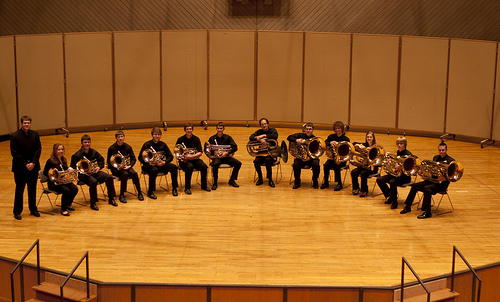
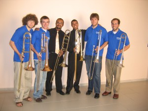

Current and past instruction include:
- Luther College, Adjunct Low Brass Faculty (Fall 2011)
- Private studio in Low Brass (Trombones, Euphonium, Tuba) Greater Champaign-Urbana Area (2009-2011)
- 5th and 6th grade band, Calamus-Wheatland School District (2009)
- Jazz Trombone Clinician at the SESC Consolacao in Sao Paulo, Brazil (May 2008)
- John Cline Elementary School, General Music, Decorah, Iowa (2008)
- Independence Community Schools band department, Independence, Iowa (2008)


- Private studio trombone & euphonium lessons, Cedar Valley and Decorah Area (2001-2008)
- Cedar Falls High School Marching Band Camp Assistant – Cedar Falls High School – Cedar Falls, Iowa (2006-2007)
- Cedar Valley Jazz Camp Instructor – Mike Mechalizik, Director, Cedar Falls, Iowa (2003-2007)
- Luther College Dorian Summer Music Camps Counselor, Decorah, Iowa (2007)
- Dr. Walter Cunningham School for Excellence Elementary School, General Music, Waterloo, Iowa (2006)